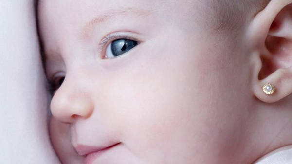
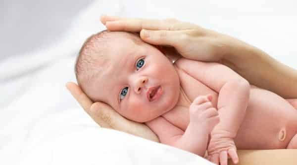

Perfil Profissional Profissional da área da saúde há 21 anos, Andrea Andrade, Enfermeira, com vasta experiência no ambiente neonatal#link , utiliza suas habilidades para orientar os pais quanto aos cuidados que se deve ter com o recém-nascido #link, bem como, realiza o furo humanizado nas orelhinhas desses bebês .#link Não o bastante, especializou-se em estética, com isso, passou a realizar em adultos o Procedimento Estético Invasivo para Microvaso#link que confere a estes pacientes a secagem dos vasinhos localizados em seus membros inferiores e, assim, melhorando o aspecto da região acometida. Neonatal setor do hospital preparado para receber bebês que nasceram antes das 37 semanas de gestação
Esta técnica tem por finalidade eliminar os microvasos decorrentes de fatores que possam interferir na circulação sanguínea dos membros inferiores tais como predisposição genética e gestação.
Trata-se de um método no qual se combina o uso de pomada anestésica seguido da aplicação de técnicas de acupuntura que permite realizar o furo no ponto da orelha menos enervado.
Para manter o bebê saudável deve-se atentar quanto aos cuidados básico quer seja o banho, aleitamento e a sua higienização. Além disso, ressalta-se a importância de se cumprir com o ciclo vacinal.